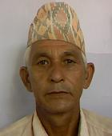

सुदूरपश्चिम प्रदेशमा कुल मतदाता १७१६६४२ रहेका छन्, जसमा पुरुष ८५२२१९, महिला ८६४४२३ र अन्य ० मतदाता समावेश छन्। यस प्रदेशअन्तर्गत बाजुरा, अछाम, बझाङ, डोटी, कैलाली, दार्चुला, बैतडी, डडेलधुरा र कञ्चनपुर जिल्लाहरू रहेका छन्। कुल प्रतिनिधि सभा निर्वाचन क्षेत्र संख्या १६ रहेको छ।


